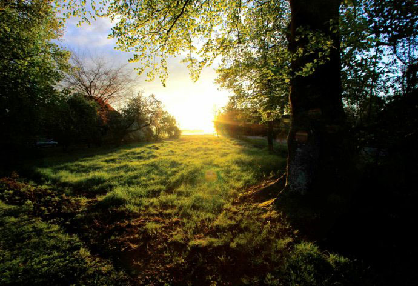
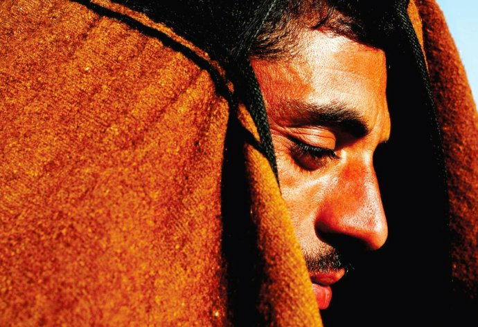

背包十年
说一声再见，因为明天我就要离开;说一声再见，因为飞翔是我的梦想;说一声再见，可能今夜我会感到难过;说一声再见，即使我真的不愿说再见。借个背包就出发2001年6月中国，阳朔几年前看过一篇关于阳朔西街的游记，其中这样写道:“在西街一个酒吧里，一个台湾来的胖哥，拉得一手美妙的小提琴。还有一个吹笛子的本地人，笛音空灵悦耳，当小提琴遇到笛子，那声音竟是不可思议的动听。

音乐的确是超越时间与空间的，从梁祝到邓丽君，从罗大佑到甲壳虫……每一首旋律开始，大家都跟着唱起来，不会唱的跟着打起节拍，早就忘了自己的国籍、年龄、身份。一曲唱罢，纷纷举杯，高呼cheers!”正是这段描述，让我对西街心生向往，并把这里当成毕业旅行的首选目的地。

在论文答辩和毕业典礼之间正好有十几天空闲时间。答辩结束后回宿舍收拾好背包，当天就坐上南下的火车。从天津到桂林，24小时硬座，身体虽然辛苦，心中却已隐隐兴奋。下火车后没有在桂林停留，而是直接跳上开往阳朔的中巴车。俗话说桂林山水甲天下，阳朔山水甲桂林，要去就去最好的地方。在阳朔西街找到那家在网上十分著名的四海客栈，讨价还价后以15元钱入住。三楼的一间四人房，临街，便宜干净。坐了一天一夜火车，胃开始抗议了，去了那家同样著名的“没有”餐厅。看到门口的广告牌上写着“没有不好喝的啤酒，没有不好吃的食物”，名字起得很聪明。点了一杯啤酒和一份牛排，面朝西街，一边吃一边看来来往往的各国游客。西街首先是背包老外发现的，某位仁兄在被背包旅行者奉为圣经的《孤独星球》(lonelyplanet，下文简称l.p.)里介绍了阳朔西街和周边的田园风光，西街就成了许多背包客的集散地。有人说中国人开始背包旅行就是从阳朔西街开始的，这话有点儿道理。以前中国人想要离开自己生活的地方远行，简直是一种奢望。曾经有一首流行歌曲唱出了这种无奈:“我想去桂林呀我想去桂林，可是有时间的时候我却没有钱。我想去桂林呀我想去桂林，可是有了钱的时候我却没时间。”等社会开放了，大家终于有钱有时间可以去旅游了，可跟着旅游团又不舒服，于是那些不想被束缚的旅行者成了背包客:拿起背包就走，喜欢哪里就待在哪里。其实到了西街，哪儿都可以不用去了，坐在街心的露天酒吧里，一杯咖啡、一本书、一盘cd。要我做神仙，我就会反问，那我现在是什么？阳朔就是这样一个地方，很容易让人放下戒备去结识陌生的朋友。抛下烦恼，让自己放纵于酒吧音乐中，午后阳光下，寂静老街里。很多游客经过时，经不起这份诱惑，留下来，数月数年，成了这儿的隐士。大隐隐于市，他们中很多人在西街有一家店，但他们又和普通生意人不同，他们坐在一起谈论的是丽江、香格里拉、喀纳斯与西藏。或者消失一段时间，再回来，又带回一段美丽传说。